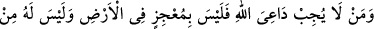
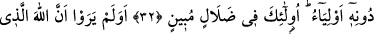
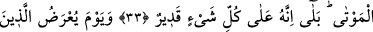
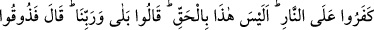
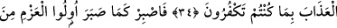
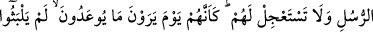
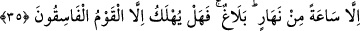

ALLAH’IN DÂVETÇİSİNE UYMAYAN
ALLAH’I ÂCİZ BIRAKACAK DEĞİLDİR
32. Allah’ın dâvetçisine uymayan kimse yeryüzünde Allah’ı âciz bırakacak
değildir. Allah’ın davetçisi için Allah’tan başka dostlar da bulunmaz. İşte onlar,
apaçık bir sapıklık içindedirler.
33. Gökleri ve yeri yaratan, bunları yaratmakla yorulmayan Allah’ın, ölüleri
diriltmeye de gücünün yeteceğini düşünmezler mı? Evet O, her şeye kadirdir.
34. İnkâr edenlere, ateşe sunulacakları gün: Nasıl, bu gerçek değil miymiş?
denildiğinde: Evet, Rabbimize andolsun ki gerçekmiş, derler. Allah: Öyleyse inkâr
etmenizden dolayı azabı tadın! der.
35. O halde (Resûlum), peygamberlerden azim sahibi olanların sabrettiği gibi sen
de sabret. Onlar hakkında acele etme, onlar vaadedildikleri azabı gördükleri gün
sanki dünyada sadece gündüzün bir saati kadar kaldıklarını sanırlar. Bu, bir
tebliğdir. Yoldan çıkmış topluluklardan başkası helâk edilir mi hiç!
“Kim Allah’ın da‘vetçisine uymazsa, yeryüzünde (başına inecek belâya) engel
olamaz.” Dünyanın neresine kaçarsa kaçsın yahut yerin derinliklerine girsin, Allah’ı
atlatamaz, kaçıp kurtulamaz. Bizzat kendi çabasıyla kurtulması muhal olduğu gibi
başkası vâsıtasıyla kurtulması da muhaldir. “Kendisinin O’ndan başka velîleri de
olmaz.” Çünkü “Onlar,” dâvete icâbet etmeyenler “apaçık bir sapıklık içindedirler.”
Bu durumun bir sapıklık olduğu pek açık olup hiç kimseye gizli kalmaz. Çünkü böyle
şânı yüce bir zâtın dâvetine icâbetten yüz çevirmişlerdir.
Burada “evliyâ” kelimesinin çoğul oluşu, “men” kelimesinin mânâsı itibariyledir. Bu